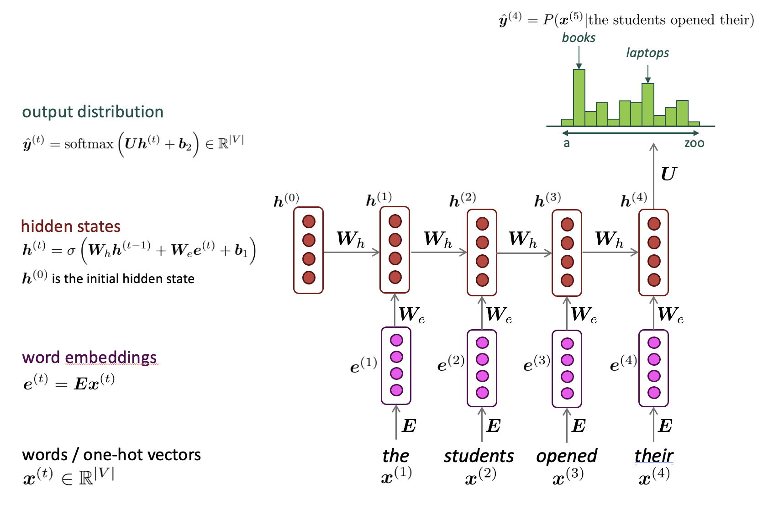
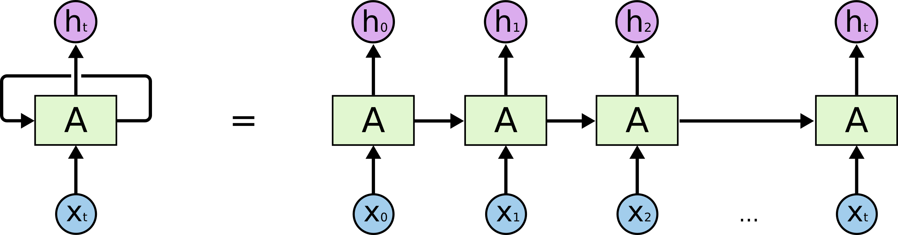

# CMSC 25700/35100: ## Natural Language Processing ## Lecture 5: The NLP Recipe <p style="text-align: center;"> <strong>Chenhao Tan</strong><br/> University of Chicago<br/> @ChenhaoTan, @chenhaotan.bsky.social<br/> chenhao@uchicago.edu </p> <a href="https://github.com/uchicago-nlp-course/winter-2025-students/issues/1">Submit Music Recommendations</a>, kudos to Mina Lee <br> <a href="https://github.com/uchicago-nlp-course/winter-2025-students/issues/2">Submit jokes</a> </p>
## Logistics * Love on notebooks! * Notation consistency
## Lecture Outline 1. Leftovers from language modeling 2. Reviewing What We Have Covered 3. A General Recipe for Modern NLP 4. More Details on Learning 5. What We Have Not Covered in Detail
## Lecture Outline 1. **Leftovers from language modeling** 2. <span style="opacity: 0.3;">Reviewing What We Have Covered</span> 3. <span style="opacity: 0.3;">A General Recipe for Modern NLP</span> 4. <span style="opacity: 0.3;">More Details on Learning</span> 5. <span style="opacity: 0.3;">What We Have Not Covered in Detail</span>
## RNN Language Model <p></p> Same weights $(W_h, W_e, U)$ used at every timestep
## RNN Language Model <p></p> [Understanding LSTM Networks by Chris Olah](https://colah.github.io/posts/2015-08-Understanding-LSTMs/)
## Advantages of RNNs - Computation at step $t$ can use information from many steps back (can process any length input) - Weights are shared across timesteps (Model size doesn't increase for longer input)
## Disadvantages of RNNs - Sequential computation: Must process tokens one at a time, cannot parallelize across timesteps - Vanishing/exploding gradients make learning long-range dependencies difficult - Gradients diminish exponentially as they backpropagate through time - LSTMs and GRUs help but don't fully solve this - Information bottleneck: All history compressed into fixed-size hidden state These issues motivated alternative architectures like Transformers.
## Evaluating Language Models How do we know if a language model is good? Standard metric: **Perplexity** $$\text{Perplexity} = \exp\left( -\frac{1}{T} \sum_{t=1}^{T} \log P(x^{(t)} | x^{(t-1)}, \ldots, x^{(1)}) \right)$$ Equivalent to the exponential of the cross-entropy loss
## Perplexity Intuition - **Lower perplexity = better model** - Interpretation: effective vocabulary size | Model | Perplexity (WikiText-103) | |-------|------------| | Unigram | ~1000 | | Bigram | ~150 | | Trigram | ~100 | | [LSTM](https://nlpprogress.com/english/language_modeling.html) | ~40 | | [GPT-2](https://cdn.openai.com/better-language-models/language_models_are_unsupervised_multitask_learners.pdf) | ~17 | | [Chinchilla](https://arxiv.org/pdf/2203.15556) (2022) | ~7 |
## Bits per Character (BPC) **Alternative metric**: Measure perplexity in **bits per character** $$\text{BPC} = -\frac{1}{C} \sum_{i=1}^{T} \log_2 P(x_i | x_{<i})$$ where $T$ = number of tokens, $C$ = number of characters **Interpretation**: How many bits needed to encode each character **Why it's useful**: - Information-theoretic interpretation (compression) - Comparable across different tokenizers
## Lecture Outline 1. <span style="opacity: 0.3;">Leftovers from language modeling</span> 2. **Reviewing What We Have Covered** 3. <span style="opacity: 0.3;">A General Recipe for Modern NLP</span> 4. <span style="opacity: 0.3;">More Details on Learning</span> 5. <span style="opacity: 0.3;">What We Have Not Covered in Detail</span>
## Review: What Have We Covered? - **Lecture 2**: Word embeddings - **Lecture 3**: Text classification - **Lecture 4**: Language modeling
## Two central themes - Dense vector representations - Prediction as classification
## Word Embedding as Classification **Skip-gram objective**: Given center word, predict context $$P(o|c) = \frac{\exp(u_o^\top v_c)}{\sum_{w \in V} \exp(u_w^\top v_c)}$$ This is **multi-class classification** over the vocabulary! - Input: center word embedding - Output: probability distribution over all words - Softmax over |V| classes
## Word Embedding as Classification (cont.) Recall Word2Vec with negative sampling: $$\log \sigma(u_o^\top v_c) + \sum_{k \in K} \log \sigma(-u_{w_k}^\top v_c)$$ This is **binary classification**: - Positive class: real context words - Negative class: randomly sampled words The embedding vectors are learned as a byproduct of classification!
## Language Modeling as Classification Language models predict the next word: $$P(w_t | w_1, w_2, \ldots, w_{t-1})$$ This is **classification over the vocabulary** at each step! - Input: sequence of previous words - Output: probability distribution over next word - Vocabulary size can be 50K+ classes
## Language Modeling as Classification (cont.) Example: "The cat sat on the ___" | Word | Probability | |------|-------------| | mat | 0.15 | | floor | 0.12 | | couch | 0.08 | | ... | ... | | elephant | 0.0001 | Generation = repeated classification + sampling
## The Unifying View Almost everything in NLP can be framed as classification: | Task | Classification Over | |------|---------------------| | Sentiment | Sentiment labels | | NER | Entity tags | | Word embeddings | Context vs. non-context | | Language modeling | Vocabulary | | Machine translation | Target vocabulary | | Question answering | Answer spans or candidates |
## Lecture Outline 1. <span style="opacity: 0.3;">Leftovers from language modeling</span> 2. <span style="opacity: 0.3;">Reviewing What We Have Covered</span> 3. **A General Recipe for Modern NLP** 4. <span style="opacity: 0.3;">More Details on Learning</span> 5. <span style="opacity: 0.3;">What We Have Not Covered in Detail</span>
## A General Recipe for Modern NLP Three key components: 1. **Data**: What are we learning from? 2. **Model**: How do we make predictions? - Objective function - Model architecture - Learning algorithm 3. **Evaluation**: How do we measure success?
## Component 1: Data Data is the foundation of modern NLP **Key considerations**: - Source: Where does the data come from? - Size: How much data do we have? - Quality: Is it clean and relevant? - Labels: Do we have ground truth annotations? - Bias: What biases might be present?
## Data Sources | Source | Examples | Pros/Cons | |--------|----------|-----------| | Web crawl | Common Crawl, Wikipedia | Large, noisy | | Curated | Penn Treebank, SQuAD | Clean, small, expensive | | User-generated | Twitter, Reddit | Natural, noisy | | Synthetic | Augmented, LLM-generated | Controllable, may lack diversity |
## Data for Classification **Sentiment analysis example**: - Data: Movie reviews with star ratings - Labels: Positive (4-5 stars), Negative (1-2 stars) - Source: IMDb, Yelp, Amazon **Challenge**: Label quality - Inter-annotator agreement - Ambiguous cases - Label noise
## Data for Word Embeddings and Language Modeling **Word2Vec example**: - Data: Large unlabeled text corpus - Labels: Self-supervised (context words) - Source: Wikipedia, news articles, web text **Key insight**: No manual annotation needed! - Context provides implicit supervision - Can use billions of words
## Component 2: Model Three sub-components: 1. **Objective function**: What are we optimizing? 2. **Model architecture**: How do we represent the function? 3. **Learning algorithm**: How do we find good parameters?
## Objective Function The objective (loss) function defines what "good" means **Common objectives**: - Mean squared error (regression) - Cross-entropy loss (classification) - Negative log-likelihood (language models) Cross-entropy loss is the same as negative log likelihood! <!-- .element: class="fragment" -->
## Objective: Classification **Cross-entropy loss** for classification: $$\mathcal{L} = -\sum_{i=1}^{N} \log P(y_i | x_i; \theta)$$ - Minimize negative log probability of correct class - Equivalent to maximizing likelihood - Works for binary and multi-class
## Model Architecture The architecture defines how inputs map to outputs **Key choices**: - Input representation (embeddings, one-hot, etc.) - Network structure (feedforward, recurrent, attention) - Output layer (softmax, sigmoid, linear) - Number of layers, hidden dimensions
## Learning Algorithm How do we find good parameters? **Gradient-based optimization**: 1. Compute loss on a batch of data 2. Compute gradients via backpropagation 3. Update parameters: $\theta \leftarrow \theta - \alpha \nabla_\theta \mathcal{L}$ 4. Repeat until convergence
## Stochastic Gradient Descent **Full-batch gradient descent**: Compute gradient over entire dataset - Accurate but slow **Stochastic gradient descent (SGD)**: Use one example at a time - Noisy but fast **Mini-batch SGD**: Use small batches (e.g., 32, 64, 128) - Balance between accuracy and speed - Standard in practice
## Component 3: Evaluation How do we know if our model is good? **Intrinsic evaluation**: Measure task-specific metrics - Accuracy, precision, recall, F1 - Perplexity (language models) - Analogy accuracy (word embeddings) **Extrinsic evaluation**: Performance on downstream tasks - Use embeddings in a classifier - Use language model for generation quality
## Evaluation Metrics: Classification **Accuracy**: Fraction of correct predictions $$\text{Accuracy} = \frac{\text{Correct predictions}}{\text{Total predictions}}$$ **Precision**: Of predicted positives, how many are correct? **Recall**: Of actual positives, how many did we find? **F1**: Harmonic mean of precision and recall
## Evaluation: Word Embeddings **Intrinsic**: - Word analogy: king - man + woman = ? - Word similarity correlation with human judgments **Extrinsic**: - Use embeddings in downstream classifier - Compare performance vs. random initialization Extrinsic often matters more in practice!
## The Recipe in Action: Classification | Component | Choice | |-----------|--------| | **Data** | Labeled reviews (train/dev/test split) | | **Objective** | Cross-entropy loss | | **Architecture** | DAN with pretrained embeddings | | **Learning** | Adam optimizer, mini-batch SGD | | **Evaluation** | Accuracy, F1 on held-out test set |
## The Recipe in Action: Word Embeddings | Component | Choice | |-----------|--------| | **Data** | Large unlabeled corpus (Wikipedia) | | **Objective** | Skip-gram with negative sampling | | **Architecture** | Two embedding matrices (center, context) | | **Learning** | SGD with learning rate decay | | **Evaluation** | Analogy task, downstream classification |
## The Recipe in Action: Language Modeling | Component | Choice | |-----------|--------| | **Data** | Large unlabeled text corpus | | **Objective** | Cross-entropy (next token prediction) | | **Architecture** | RNN/LSTM or Transformer | | **Learning** | Adam optimizer, mini-batch SGD | | **Evaluation** | Perplexity on held-out test set |
## Lecture Outline 1. <span style="opacity: 0.3;">Leftovers from language modeling</span> 2. <span style="opacity: 0.3;">Reviewing What We Have Covered</span> 3. <span style="opacity: 0.3;">A General Recipe for Modern NLP</span> 4. **More Details on Learning** 5. <span style="opacity: 0.3;">What We Have Not Covered in Detail</span>
## More Details on Learning We have been talking about stochastic gradient descent, but what makes it possible?
## More Details on Learning Key topics: - Computation graphs - Building blocks - Optimizers
## Computation Graphs A **computation graph** represents the flow of computations - Nodes: operations (add, multiply, sigmoid, etc.) - Edges: data flow (tensors) **Why it matters**: - Automatic differentiation (backpropagation) - Frameworks like PyTorch build graphs dynamically
## Local Gradient: Addition ```python def forward(a, b): return a + b def backward(grad_c): grad_a = grad_c # passes through grad_b = grad_c # passes through return grad_a, grad_b ``` **Example**: `a=3, b=2` → `c=5`. If `grad_c=4`: `grad_a=4, grad_b=4` In PyTorch: `AddBackward`
## Local Gradient: Multiplication ```python def forward(a, b): return a * b def backward(grad_c, a, b): grad_a = b * grad_c # scaled by other input grad_b = a * grad_c # scaled by other input return grad_a, grad_b ``` **Example**: `a=3, b=2` → `c=6`. If `grad_c=4`: `grad_a = 2*4 = 8`, `grad_b = 3*4 = 12` In PyTorch: `MulBackward`
## Local Gradient: Transpose ```python def forward(X): return X.T def backward(grad_Y): grad_X = grad_Y.T # just transpose again return grad_X ``` **Example**: `grad_Y = [[1,2],[3,4]]` `grad_X = [[1,3],[2,4]]` In PyTorch: `TBackward`
## Local Gradient: ReLU ```python def forward(x): return max(0, x) def backward(grad_y, x): if x > 0: return grad_y # pass through else: return 0 # block gradient ``` **Example**: `x=3, grad_y=5` → `grad_x=5` `x=-2, grad_y=5` → `grad_x=0` (gradient dies!) In PyTorch: `ReluBackward`
## Local Gradient: Sigmoid ```python def forward(x): y = 1 / (1 + exp(-x)) return y def backward(grad_y, y): grad_x = y * (1 - y) * grad_y return grad_x ``` **Example**: `x=0` → `y=0.5`, `grad_y=4` `grad_x = 0.5 * 0.5 * 4 = 1` In PyTorch: `SigmoidBackward`
## Chaining: The Key Insight Each node only needs its **local** `backward()` function ```python # Forward c = a * b e = c + d f = relu(e) # Backward (PyTorch does this automatically) grad_f = 1.0 grad_e = relu_backward(grad_f, e) # = 1 if e>0 grad_c = add_backward(grad_e) # = grad_e grad_a = mul_backward(grad_c, a, b) # = b * grad_c ``` This is exactly what `loss.backward()` does!
## 💻 Demo: Computation Graphs in PyTorch → **Notebook: `computation_graphs.ipynb`**
## Backpropagation in deep networks (e.g., over timesteps in RNNs) Gradients flow backward through all timesteps: $$\frac{\partial L}{\partial W_h} = \sum_{t=1}^{T} \frac{\partial L_t}{\partial W_h}$$ **Problem**: Gradients pass through many $\tanh$ and $W_h$ multiplications - If $\|W_h\| < 1$: gradients **vanish** (shrink exponentially) - If $\|W_h\| > 1$: gradients **explode** (grow exponentially) This is why learning long-range dependencies is hard!
## Building Blocks: Dropout Dropout is a simple way to prevent overfitting by randomly "dropping" units during training **Training time**: Randomly set $p$% of activations to 0, scale rest by $\frac{1}{1-p}$ - Typical: $p = 0.5$ for hidden layers, $p = 0.1$ or 0 for input layer **Test time**: Use network as-is (scaling already done during training)
## Building Blocks: Dropout (cont.) - Can be thought of as an ensemble model (use different subset of features each time) - Can also be thought of as a regularizer <p class="citation">Dropout: A Simple Way to Prevent Neural Networks from Overfitting (Srivastava et al., 2014)</p>
## Building Blocks: Activation Functions **Why non-linearity?** Without it, stacking layers = single linear transformation | Function | Formula | Range | |----------|---------|-------| | Sigmoid | $\sigma(x) = \frac{1}{1+e^{-x}}$ | (0, 1) | | Tanh | $\tanh(x) = \frac{e^x - e^{-x}}{e^x + e^{-x}}$ | (-1, 1) | | ReLU | $\max(0, x)$ | [0, ∞) | | GELU | $x \cdot \Phi(x)$ | (-0.17, ∞) |
## Activation Functions (cont.) **Sigmoid/Tanh problems**: - Gradients vanish for large |x| (saturation) - Sigmoid not zero-centered **ReLU advantages**: - Fast to compute - No vanishing gradient for x > 0 - Sparse activations **ReLU problem**: "Dead neurons" when x < 0 (gradient = 0)
## GELU: Gaussian Error Linear Unit $$\text{GELU}(x) = x \cdot \Phi(x)$$ where $\Phi(x)$ = CDF of standard normal = $P(X \leq x)$ for $X \sim \mathcal{N}(0,1)$ Intuition: Smoothly gates x based on how "positive" it is Common approximation (faster, used in practice): $\text{GELU}(x) \approx 0.5x\left(1 + \tanh\left(\sqrt{\frac{2}{\pi}}\left(x + 0.044715x^3\right)\right)\right)$ Default in BERT, GPT, and most transformers
## Optimizers Plain SGD will work, but often requires hand-tuning learning rate Adaptive optimizers scale adjustment to individual parameters: - Adagrad: Simplest, but tends to "stall early" - RMSprop: Addresses Adagrad's issues - Adam: A good, safe place to begin in many cases - AdamW: Adam with weight decay - NAdamW: Better with word vectors, Nesterov acceleration Start with initial learning rate around 0.001
## Practical Advice **Starting point**: - Use Adam or AdamW - Initial learning rate: 1e-3 to 1e-4 for training from scratch - Initial learning rate: 1e-5 to 5e-5 for fine-tuning pretrained models - Batch size: 32, 64, or 128 - Consider learning rate warmup and decay **When to tune**: - If training is unstable, reduce learning rate - If training is slow, try increasing learning rate - For fine-tuning pretrained models, use smaller learning rates
## Vectorization Always use **vectors and matrices** rather than for loops! ```python # Looping: 639 us per loop [W.dot(wordvectors_list[i]) for i in range(N)] # Matrix: 53.8 us per loop W.dot(wordvectors_one_matrix) ``` Speed gain is 1-2 orders of magnitude with GPUs!
## Experimental Practice **Data splits**: Train / Dev / Test - **Train**: Learn parameters - **Dev**: Tune hyperparameters, select models - **Test**: Final evaluation only **Golden rule**: Never use test set for model selection!
## Experimental Practice (cont.) **Hyperparameter tuning**: - Learning rate, batch size, hidden dimensions, dropout rate, etc - Use dev set to compare configurations
## Experimental Practice (cont.) **Reproducibility**: - Set random seeds - Report variance across runs - Document all hyperparameters **Statistical significance**: - Is improvement real or due to chance? - Use multiple runs, report confidence intervals
## Lecture Outline 1. <span style="opacity: 0.3;">Leftovers from language modeling</span> 2. <span style="opacity: 0.3;">Reviewing What We Have Covered</span> 3. <span style="opacity: 0.3;">A General Recipe for Modern NLP</span> 4. <span style="opacity: 0.3;">More Details on Learning</span> 5. **What We Have Not Covered in Detail**
## What We Do Not Cover (But Is Important) Some topics we will not dive deep into: * Scaling: Distributed training, data/model/tensor parallelism * Optimization theory: Why Adam works, loss landscapes * Debugging: Diagnosing training failures, gradient issues * Data pipelines: Preprocessing, filtering, deduplication at scale * Efficient training: Mixed precision, gradient checkpointing * Efficient inference: Quantization, distillation, KV caching * Infrastructure: GPU clusters, cloud platforms, job scheduling
## Looking Ahead: The Rest of This Course Organized by the NLP recipe: | Component | Upcoming Lectures | |-----------|-------------------| | Model: Architecture | Attention, Transformers | | Model: Learning | Pretraining, Post-training (RLHF) | | Model: Inference | Decoding, Prompting | | Evaluation | Benchmarks and Evaluation | | Applications | Reasoning, Agents, Multimodal | | Special Topics | Alignment and Safety |
## A Key Missing Part of the Recipe Traditional (what we covered): - Labeled data → Train classifier → Use Modern paradigm: - Large unlabeled data → Pretrain LM → Fine-tune or prompt This shift does not change the core role of data, model, and evaluation, but it does change how we think about them!
## Summary - **Classification is broad**: Word embeddings and language modeling are classification too - **The NLP recipe**: - Data: source, size, quality, labels - Model: objective, architecture, learning algorithm - Evaluation: how to know whether a model is good
# Questions?